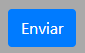

1
Faça login ou crie sua conta no Cidadão Conectado.
Faça login ou cadastre-se2
Preencha todos os campos da solicitação. Seja claro(a) e objetivo(a) ao detalhar o ocorrido; isso ajudará a resolver o problema de forma mais rápida.

3
Logo após clique no botão.
4
Sucesso! Sua solicitação foi enviada ao órgão responsável. Agora é só aguardar a resolução do problema!